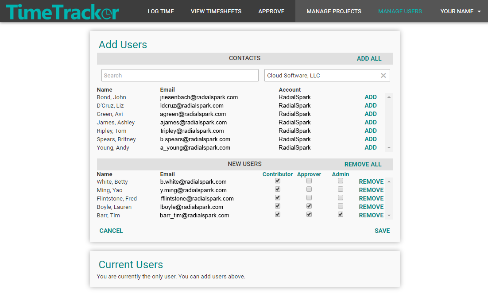
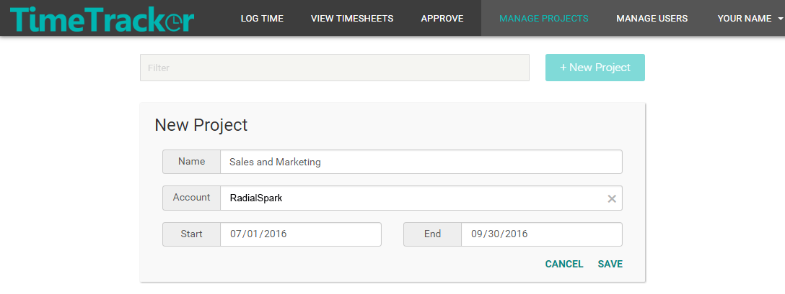
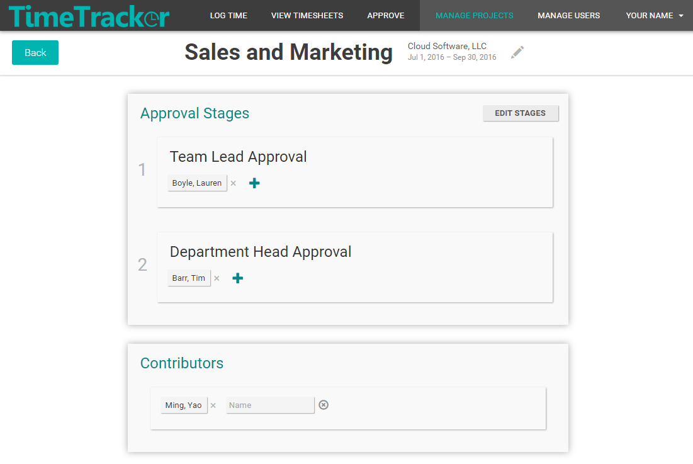
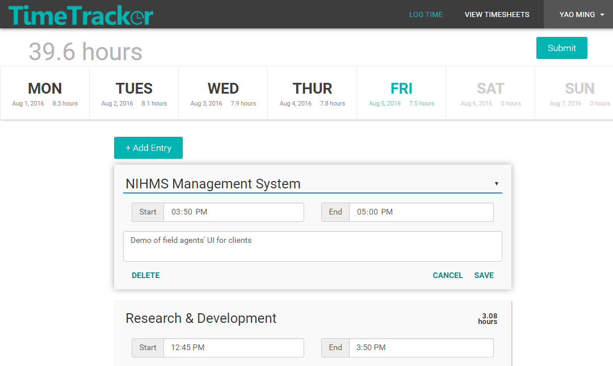
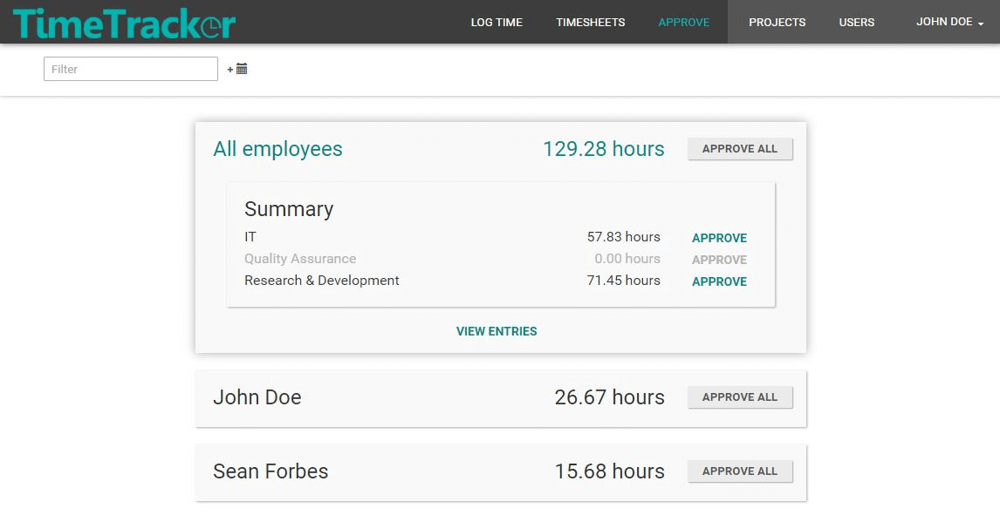
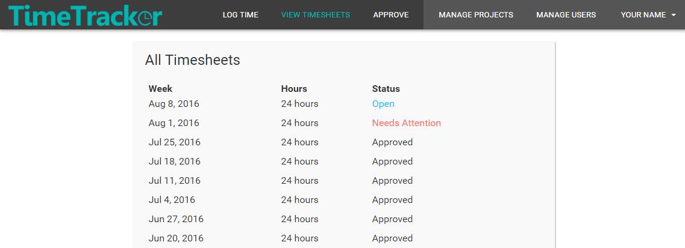

This walkthrough will help you get started with TimeTracker. It assumes that you have set up the Salesforce and Heroku apps and have created a user for yourself.


This walkthrough will help you get started with TimeTracker. It assumes that you have set up the Salesforce and Heroku apps and have created a user for yourself.
You can create users in the TimeTracker app for any of the Contacts in your Salesforce org. To do so, navigate to the Manage Users tab and click ADD on the rows of the Contacts for whom you want to create a TimeTracker user. Designate which role(s) these users should have (Contributor, Approver, and/or Admin) and click SAVE. A registration email will be sent to the email address on record (in Salesforce) for each new user to have them reset their password. Note: if your Salesforce org has many Contacts, you can search for them by name or account.
| Role | What a user with this role can do |
| Contributor | Log time entries; Submit weekly timesheets; Review past timesheets |
| Approver | View submitted entries for the projects they approve; Approve and reject entries |
| Admin | Create and configure projects; Create and assign users |

To demo all aspects of the app you must have at least one user with a contributor role, one with an approver role, and one with an admin role (they can be the same user if you like).
Projects are used to categorize and track time entries. To create projects relevant to your business processes, navigate to the Manage Projects tab and click New Project.

A project requires a pre-existing Salesforce Account, so make sure you have an Account under which to save the project.
Project start and end dates are not required.
After creating projects, assign personnel to work on them. You can add contributors and approvers.
If your business processes include an approval process, first configure the process by creating approval stages. Click on a project card from the Manage Projects tab and then click ADD STAGE in the Approval Stages section. Create a sequence of at least one approval stage and add approver(s) to each approval stage. Then, add contributor(s) to the project to enable users to log time under this project.

If your business processes do not require an approval process, only add contributors to projects.
Once you're logged in as a user who has a contributor role (given from Manage Users page) and who is assigned as a contributor to at least one project (assigned from the Manage Projects page), you can start logging time from the Log Time tab.
After creating some time entries, try submitting the page by clicking the Submit button in the upper right corner of the page. This will submit your week's worth of time entries for approval.

Once you're logged in as a user who has an approver role and who is assigned as an approver to at least one project, you can view and approve time entries for your projects. When approving entries you are provided with the ability to filter by criteria such as project name, employee name, date range, description, etc. You have the option to approve or reject groups of entries all at once or individual entries one at a time.

Rejecting a time entry triggers an email to be sent to its owner (at the email address of their Salesforce contact) prompting them to view the problematic timesheet and correct the time entry.
You can view current and past timesheets by navigating to the View Timesheets tab.
Timesheets are read-only after they are submitted, with the exception of timesheets that need attention after a time entry is rejected by a project approver. Timesheets that need attention are editable and available for resubmission.
